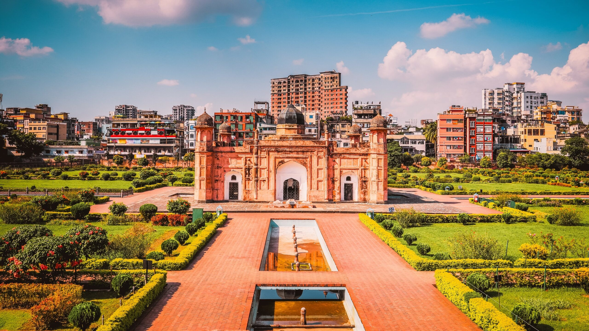
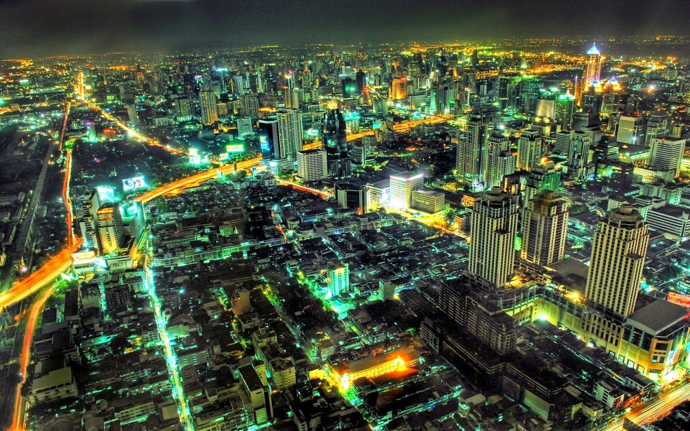
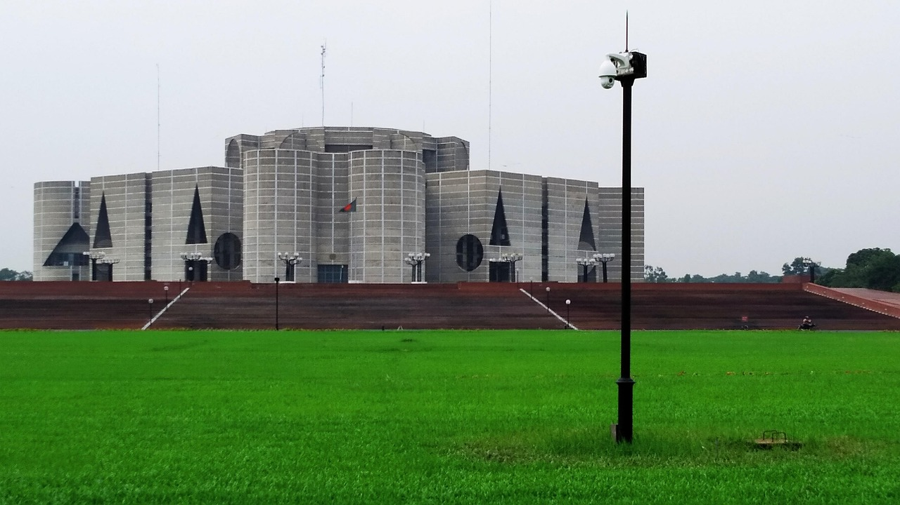

The Heartbeat of Bangladesh
Dhaka is the capital and largest city of Bangladesh, serving as the nation's political, economic, and cultural heart. It is one of the most densely populated and dynamic urban centers in the world, offering a unique blend of tradition and modernity. The city is historically known as the "City of Mosques" and the "Venice of the East" due to its Islamic architecture and riverfront location. It is also famously called the "Rickshaw Capital of the World".
Dhaka's history spans over a millennium. It rose to prominence in the 17th century when it was designated the capital of the Bengal province under the Mughal Empire in 1608. During this era, it became a thriving hub for trade, particularly for the renowned muslin fabric. In 1971, after a brutal liberation war, Dhaka was declared the capital of the newly independent Bangladesh.
The city is situated in central Bangladesh, within the deltaic plains formed by the Ganges, Brahmaputra, and Meghna rivers, on the north bank of the Buriganga River. It sits at an average elevation of about 4 to 7.5 meters above sea level, making it prone to flooding. Dhaka experiences a tropical monsoon climate with three distinct seasons.
An incomplete 17th-century Mughal palace fortress that stands proudly on the banks of the Buriganga River.
A magnificent two-storied palace, also known as the "Pink Palace," which was the opulent residence of the Nawabs of Bengal.
A 12th-century Hindu temple from which the city's name is believed to be derived.
An imposing architectural landmark blending European and Indian influences, now part of the University of Dhaka.
As the economic hub of the country, Dhaka is Bangladesh's largest and most industrialized city. It is the center of the nation's textile industry and a major financial center, contributing about 36 percent of Bangladesh's economic output.



孟加拉国的心跳
达卡是孟加拉国的首都和最大城市，是该国的政治、经济和文化中心。它是世界上人口最稠密、最具活力的城市中心之一，提供了传统与现代的独特融合。由于其伊斯兰建筑和河滨位置，该市历史上被称为“清真寺之城”和“东方威尼斯”。它还因拥有数十万辆三轮车而被称为“世界三轮车之都”。
达卡的历史跨越了千年。它在17世纪崛起，1608年莫卧儿帝国将其定为孟加拉省的首府。在这个时代，它成为繁荣的贸易中心，尤其是著名的平纹细布（Muslin）。1971年，经过残酷的解放战争，达卡被宣布为新独立的孟加拉国的首都。
该市位于孟加拉国中部，在恒河、雅鲁藏布江和梅克纳河形成的三角洲平原上，位于布里甘加河北岸。它的平均海拔在4到7.5米之间，容易发生洪水。达卡属于热带季风气候，有三个截然不同的季节。
一座未完工的17世纪莫卧儿宫殿堡垒，自豪地矗立在布里甘加河畔。
一座宏伟的两层宫殿，也被称为“粉红宫殿”，曾是孟加拉纳瓦布（Nawab）的豪华住所。
一座12世纪的印度教神庙，人们认为该市的名字就来源于此。
一座宏伟的地标性建筑，融合了欧洲和印度的风格，现在是达卡大学的一部分。
作为该国的经济中心，达卡是孟加拉国最大、工业化程度最高的城市。它是全国纺织业的中心和主要的金融中心，贡献了孟加拉国约36%的经济产出。